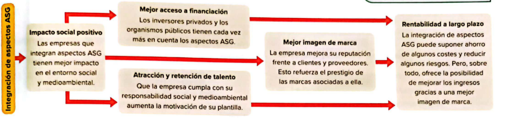

Diseño de estrategias ASG
1.- Riesgos ASG.
Son circunstancias ambientales, sociales y de gobernanza que, si se producen, afectan negativamente a la rentabilidad y continuidad de los negocios.
2.- Compromisos y políticas ASG.
Son principios generales y medidas concretas que reducen los riesgos ASG y aprovechan oportunidades que se identifican en estos ámbitos.
3.- Las Normas Europeas de Información sobre Sostenibilidad (NEIS) y el estado no financiero.
Información general
Requisitos generales
: convenciones seguidas, definiciones y normas seguidas para presentar la información.
Información general
: requisitos de divulgación repecto de la información que la empresa debe proporcionar a la sociedad.
Información medioambiental
Cambio climático
: medidas de mitigación, de adaptación y energéticas.
Contaminación
: del aire, del agua, del suelo, de organismos y alimentos, generación de sustancias contaminantes, plásticos.
Agua y recursos marinos
: consumo, extracción y vertidos de aguas, uso de recursos marinos.
Biodiversidad y ecosistemas
: factores de pérdida de bioversidad.
Economía circular
: entradas y salidas de recursos, residuos.
Información social
Personal propio.
Trabajadores de la cadena de valor.
Colectivos afectados.
Consumidores y usuarios finales.
Información sobre gobernanza
Conducta empresarial
: cultura corporativa, protección de denunciantes, bienestar animal, compromiso político y actividades con grupos de presión.
Ventajas de integrar los aspectos ASG
